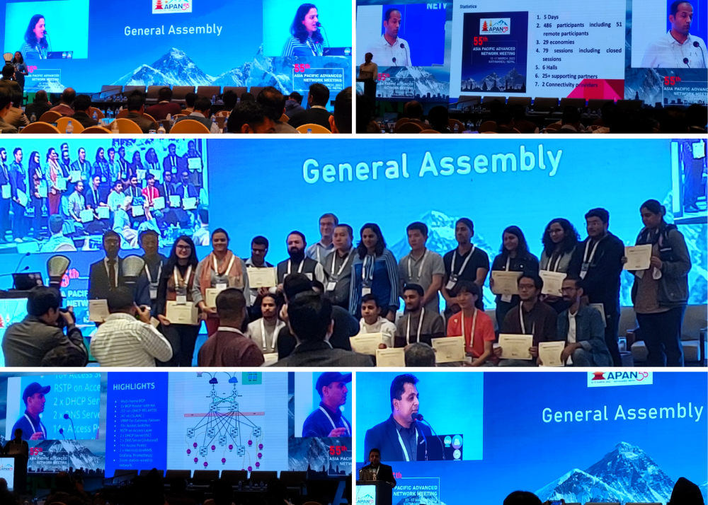

Attending an in-person Asia Pacific Advanced Network (APAN) meeting for the first time
Also posted on Software Sustainability Institute’s blog.
Attending the 55th Asia Pacific Advanced Network (APAN) meeting was a remarkable experience for me as it was my first time attending an in-person APAN meeting as an APAN Fellow. Even though I had participated in APAN53 online before, the opportunity to attend the in-person meeting held in Kathmandu, Nepal provided a distinctive experience. Day 1 of the APAN55 meeting started with Delegate registration. Following this I participated in the APAN 101 gathering, where Markus Buchhorn from Australia served as host and provided an overview of APAN and its Fellowship program. Markus explained how APAN came into existence in 1995 and was established in 2009 as a partnership between various National Research and Education Networks (NRENs) that support research and education in various regions by linking universities, higher education institutions, government agencies, and providing resources such as supercomputers and cloud infrastructure. He also discussed the APAN structure, which includes working groups, task forces, and committees that form the backbone of the organisation. Additionally, he described the activities that typically occur during an APAN meeting, which has evolved into a conference, such as working group and committee sessions, plenaries, keynotes, general assembly, social events, workshops, side meetings, and the council meeting. This session offered me valuable insights into the APAN meetings. Following this, I attended the RPKI Theory + Hands-On tutorial session, led by Dibya Khatiwada from Nepal. This session covered IP routing and Validation States, which was a new topic for me. I gained some insights into the technical jargon and field of IP routing.
Later on, I joined a session hosted by the Cloud Working Group (CloudWG). During this session, Eric Yen from Taiwan presented an update on Science Cloud in Academia Sinica. Eric explained that the mission of the CloudWG is to promote and share the development of Cloud-based ICT technology and applications. He also described the CloudWG as an open collaboration platform that enables the sharing of case studies, solutions, technologies, and user community requirements, as well as collaboration between user communities and other Working Groups at APAN. Eric shared the vision of an Open Science Cloud that aims to drive transformative discoveries in all areas of S&E research and education through community-driven, research-focused, accessible, open, transparent, and trustworthy means. Eric concluded by inviting participants to collaborate with their group.
JongWon Kim from South Korea presented a discussion on “Preparing Cloud-native & Data-centric Computing for Live X+AI Services.” The discussion focused on how to prepare for a futuristic computing environment to enable seamless live interaction of training and inference for emerging X+AI services. The ongoing preparation aligns with the upcoming digital transformation and leverages the latest trends for cloud-native and data-centric edge computing paradigms to facilitate open and federated collaboration of diversified R&D communities.
Lastly, Mir Muhammad Suleman Sarwar from South Korea spoke on IBN for overlay networks in Cloud Intent-Based Networking (IBN) for deploying and managing L2 overlay networks such as GENEVE tunnels between OpenStack based multiple clouds. The discussion centred on how multiple clouds use the overlay network to share resources and how the IBN application can deploy microstack-based OpenStack Clouds by providing system credentials, after which a network administrator can deploy an overlay network between all the Cloud nodes using the IBN application based on ML results. The session provided a valuable opportunity for me to learn more about the CloudWG at APAN and the developments and updates presented in the session.
On day one, I wrapped up my schedule by attending the session titled “iFIRExMAN - Setting up eduroam in your federation infrastructure,” which was hosted by Irfan Hakim and Muhammad Farhan Sjaugi from Malaysia. The session discussed how to set up and configure a Radius service using the same Kubernetes infrastructure as one’s identity federation. This Radius service would serve as the central point for all eduroam authentication in a country and could also be used to connect to the global Radius infrastructure. This would enable researchers, staff, and students to access resources globally and also allow international researchers to access resources while travelling in other countries.
During day 2, I attended the session “iFIRExMAN - Setting up eduroam in your federation infrastructure” again, which was hosted by Irfan Hakim and Muhammad Farhan Sjaugi from Malaysia. This session was followed by a talk by Terry Smith from Australia on “iFIRExMAN - Joining eduGAIN”. The latter session discussed eduGAIN, which is a federation of federations providing access to millions of identities and thousands of services. I learned that connecting a federation to eduGAIN could encourage universities and research institutions to join the federation. Terry Smith’s talk covered the process of joining eduGAIN, its benefits, expectations from members, and the potential challenges that one may encounter.
On day 2, the organisers hosted the Opening Ceremony and Opening Keynote, delivered by Dr Arun Bhakta Shreshtha and Purnima Shreshtha. During the ceremony, a Memorandum of Understanding for KISTI - Asia-Pacific Europe Ring was signed. Both Keynote speakers focused on the impact of climate change on the Himalayan region. Dr Arun Bhakta Sheshtha emphasised the global importance of the Hindu Kush Himalaya or the Third Pole, with its monsoon-dominated climate providing essential resources such as food, energy, water, and carbon, as well as significant cultural and biological diversity. Meanwhile, Purnima Shreshtha shared insights into the life of the Himalayan people.
Following the Opening Ceremony and Keynote, I participated in a session called “The IPv4/IPv6 Joint Research Project Updates”. During this session, a review of the joint IPv6 project was presented by Changqing An from Beijing. Qianli Zhang from Tsinghua University delivered a report on global cyberspace surveying and mapping. Mohammad Tawrit from Dhaka presented a review of his participation in the BGP watch portal, while Dhammika Lalantha from Sri Lanka discussed the user experience and offered suggestions for improving the BGP watch platform.
During day 3 of the event, I gave a presentation entitled “Research Software Engineering (RSE) Asia Association: Journey and Future Plans” at the “Open and Sharing Data Working Group (OSDWG): Asia Pacific Open-Sharing Data and NRENs Open Science” session. Mehul Raval also gave a presentation on initiatives for open data creation and sharing at Ahmedabad University, and Markus Buchhorm from Australia spoke about implementing good practices from Australian Open Science in the APAN community. Additionally, I shared swag for the RSE Asia Association and the Open Life Science programme, which were sponsored by the Open Life Science programme. During the session, I also conducted a task in which participants were asked to share their ideas on Research Software Engineering as a career path and how open science could benefit researchers globally. I collected the responses and compiled them into a Twitter thread, tagging those who gave permission and maintaining anonymity for those who requested it. Later, I attended the IAM Task Force - eduGAIN Steering Group meeting, which was led by Terry Smith.

During Day 4, I spent time distributing swag and interacting with participants. Later, I attended the APAN55 Council Meeting, which was led by Markus Buchhorn. During the meeting, I learned about several updates taking place at APAN. Markus announced that Liana Jacinta would be the new General Manager of APAN and Shaan Sivagurunathan would be the new Secretariat of APAN, in addition to renewals of several agreements at APAN. There were also discussions about potential areas for improvement at APAN and how the community could contribute to those efforts.
During another session on “Sustaining NREN Services for the Future - FileSender and more,” I had the opportunity to hear from Ben Martin, the Lead Developer of FileSender, who discussed the roadmap for FileSender v3 and how it could benefit the research and education community. Brook Schofield from the FileSender.Asia project also presented on how the project could benefit NRENs and how to ensure its sustainability in the long term. The fourth day of the event concluded with a closing social dinner, during which I met Andrew Howard from National Computational Infrastructure, Canberra. Andrew was gracious enough to introduce me to several attendees and we discussed the potential for future collaborations with the RSE Asia Association.

During the last day of APAN55, I participated in the closing plenary. Among the speakers was Eric Huizer, CEO of GEANT, who discussed the importance of fostering community spirit, promoting service, and encouraging innovation in the global REN community. He emphasised the principles of doing good, doing right, and doing better to achieve these goals. Afterwards, there was a session titled “Sensitising on the Potential of Research and Education Networks,” which aimed to raise awareness among universities and other knowledge communities about the potential benefits of research and education networks. This session was open to APAN participants and featured senior officials from various universities and colleges in Nepal. Leaders from different NRENs also participated and shared their activities to inform and educate the local attendees.
The General Assembly marked the final session of APAN55, during which several important announcements were made. One such announcement was the official appointment of Liana Jacinta as the new General Manager of APAN. Rajan Parajuli from the Nepal Research and Education Network gave a brief overview of the conference and its origins, and also shared how they planned to host the first in-person and online APAN meeting, post-pandemic. Additionally, the APAN55 fellows were presented with certificates during the General Assembly. Finally, the hosts of the next meeting, APAN56, were invited onto the stage to launch the event, which is scheduled to be held in Sri Lanka from August 21st to 25th 2023!
